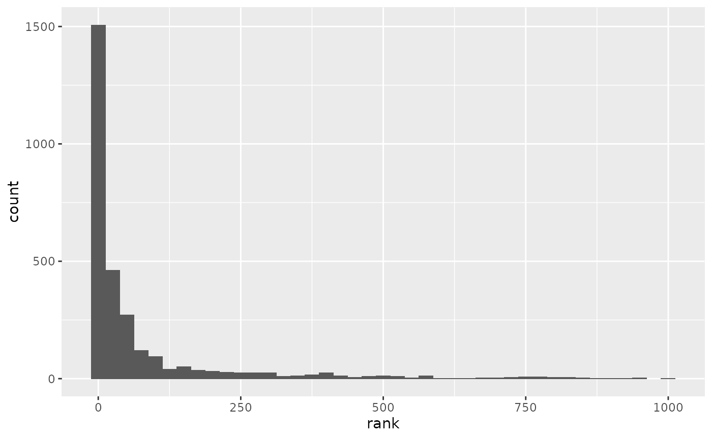

vignettes/sbo.Rmd
sbo.RmdThe sbo package provides utilities for building and evaluating next-word prediction functions based on Stupid Back-off N-gram models in R. In this vignette, I illustrate the main feature of sbo, including in particular:
The sbo package pivots around two (S3) object classes:
kgram_freqs: A collection of \(k\)-gram frequency tables, with \(k\) up to a given order \(N\). These are obtained from a training corpus through the function get_kgram_freqs().sbo_predictor: these objects directly store next-word predictiors, allowing for memory compression and fast access. They can be built from kgram_freqs objects through train_predictor().In addition, sbo features the function eval_sbo_predictor, which allows to evaluate prediction accuracy on a new test corpus.
sbo
In this and the next section we will employ the twitter_train and twitter_test example datasets, included in sbo for illustrative purpose:
train <- twitter_train
test <- twitter_testThese are small samples of \(7·10^4\) and \(10^4\) entries, respectively, from the “Tweets” Swiftkey dataset fully available here. Each entry consists of a single tweet in English, e.g.:
head(train, 3)
#> [1] "Just realized that Cedar Block is equal parts nutjob conspiracy theorist and pragmatic skeptic. Which side will win? Stay tuned."
#> [2] "Doesn't get any stricter than a book set in the past!"
#> [3] "Hunger Games! So excited! Want go!"The prototypical workflow for building a text-predictor in sbo goes as follows:
Step 0 (optional). Build a dictionary from training set, keeping the top \(V=1000\) most frequent words:
# N.B.: get_word_freqs(train) stores word counts in a sorted named integer.
word_freqs <- get_word_freqs(train)
dict <- names(word_freqs)[1:1000]
head(dict)
#> [1] "the" "to" "i" "a" "you" "and"Alternatively, if available, one may use a predefined dictionary.
Step 1. Obtain \(k\)-gram frequencies from training corpus:
(freqs <- get_kgram_freqs(train, N = 3, dict)) # 'N' is the order of n-grams
#> A k-gram frequency table.
#>
#> See summary() for more details; ?predict.kgram_freqs for usage help.Step 2. Build next-word prediction tables:
(p <- train_predictor(freqs, L = 3)) # L = number of predictions to output per input k-gram
#> A Stupid Back-Off text predictor .
#>
#> See summary() for more details; ?predict.sbo_predictor for usage help.The p object now stores all the information needed to generate next-word predictions according to Stupid Back-Off. The argument L fixes the number of predictions to retain per input k-gram (here we prune to the top 3 predictions).
At this point we can predict next words from our model, by using predict (here leftmost words are the top predictions):
predict(p, "i love") # a character vector
#> [1] "you" "it" "the"
predict(p, "you love") # another character vector
#> [1] "me" "<EOS>" "it"
predict(p, c("i love", "you love")) # a character matrix
#> [,1] [,2] [,3]
#> [1,] "you" "it" "the"
#> [2,] "me" "<EOS>" "it"See ?predict.sbo_predictor for further information on the relevant predict method.
Last, but not least, we can employ our model for generating some beautiful non-sense:
set.seed(840)
babble(p)
#> [1] "who's ready."
babble(p)
#> [1] "isn't it."
babble(p)
#> [1] "news is welcome and best."The above example illustrates how to use a text predictor in interactive mode. If the training process is computationally expensive, one may want to save the text predictor object (i.e. p in the example above) out of physical memory (e.g. through save()). For this purpose1, sbo provides the class sbo_predtable (“Stupid Back-Off prediction tables”).
These objects are a “raw” equivalent of a text predictor, and can be created with build_predtable():
t <- build_predtable(freqs)From t, one can rapidly recover the corrisponding text predictor, through load_predictor():
p <- load_predictor(t) # This is the same as 'p' created aboveObjects of class sbo_predtable can be safely stored out of memory and loaded in other R sessions:
kgram_freqs and sbo_predictor class objectsAs the name suggests, objects of class kgram_freqs store the counts for each \(k\)-gram observed in the training corpus. These are the building block for any \(N\)-gram based language model, and indeed text prediction can be performed directly from the freqs object obtained above:
predict(freqs, "i love")
#> # A tibble: 1,001 x 2
#> completion probability
#> <chr> <dbl>
#> 1 you 0.216
#> 2 it 0.0626
#> 3 the 0.0541
#> 4 my 0.0482
#> 5 that 0.0406
#> 6 how 0.0372
#> 7 u 0.0347
#> 8 your 0.0279
#> 9 this 0.0211
#> 10 <EOS> 0.0135
#> # … with 991 more rowsThe output contains the full language model information, i.e. the probabilities2 for each possible word completion.
On the contrary, sbo_predictor objects directly store next-word predictions for each \(k\)-gram prefix (\(k=1,\,2,\dots,\,N-1\)) observed in the training corpus. The advantage provided by sbo_predictor objects for simple text prediction is two-fold:
size_in_MB <- function(x) format(utils::object.size(x), units = "MB")
sapply(list(sbo_predtable = t, kgram_freqs = freqs), size_in_MB)
#> sbo_predtable kgram_freqs
#> "1.5 Mb" "5.9 Mb"
chrono_predict <- function(x) system.time(predict(x, "i love"), gcFirst = TRUE)
lapply(list(p = p, freqs = freqs), chrono_predict)
#> $p
#> user system elapsed
#> 0.001 0.000 0.000
#>
#> $freqs
#> user system elapsed
#> 0.135 0.000 0.135Both objects store, through attributes, information about the training process. This can be conveniently obtained through the corresponding summary() methods, e.g.
summary(p)
#> Next-word text predictor from Stupid Back-off N-gram model
#>
#> Order (N): 3
#> Dictionary size: 1000 words
#> Back-off penalization (lambda): 0.4
#> Maximum number of predictions (L): 3
#>
#> Object size: 0.1 Mb
#>
#> See ?predict.sbo_predictor for usage help.sbo_predictor and sbo_predtable objectsHere are some details on the current (still under development) implementation of sbo_predictor and sbo_predtable objects. For clarity, I will refer to the sbo_predtable instance t created above:
head(t[[3]])
#> w1 w2 prediction1 prediction2 prediction3
#> [1,] 0 0 3 1001 43
#> [2,] 0 1 104 110 126
#> [3,] 0 2 1 16 30
#> [4,] 0 3 36 78 98
#> [5,] 0 4 1001 292 54
#> [6,] 0 5 23 51 44The first two columns correspond to the word codes4 of \(2\)-gram prefixes observed in the training corpus, and the other columns code the top \(L=3\) predictions for these \(2\)-grams. When a \(2\)-gram \(w_1 w_2\) is given as input for text prediction, it is first looked for in the prefix columns of t[[3]]. If not found, \(w_2\) is looked for in the prefix column of t[[2]]. If this also fails, the prediction is performed without any prefix, that is, we simply predict the L most frequent words, stored in:
t[[1]]
#> prediction1 prediction2 prediction3
#> [1,] 1001 1 2Usually text corpora require preprocessing before word and \(k\)-gram tokenization can take place. The .preprocess argument of get_kgram_freqs() allows for an user specified preprocessing function. The default is the minimal sbo::preprocess(), and the optimized get_kgram_freqs_fast(erase = x, EOS = y) is equivalent to get_kgram_freqs(.preprocess = sbo::preprocess(erase = x, EOS = y)) (but substantially more efficient).
Tokenization at the sentence level is required to obtain terminal \(k\)-grams (i.e. \(k\)-grams containing Begin-Of-Sentence or End-Of-Sentence tokens). In the training process, sentence tokenization takes place after text preprocessing.
End-Of-Sentence (single character) tokens are specified by the EOS argument of get_kgram_freqs() and get_kgram_freqs_fast(); empty sentences are always skipped. Also, if the input vector text has length(text) > 1, the various elements of text belong to different entries.
The process of sentence tokenization can also be performed directly, through sbo::tokenize_sentences(), but this is not required for use with get_kgram_freqs*().
This Section leverages, for convenience, on:
Once we have built our next-word predictor, we may want to directly test its predictions on an independent corpus. For this purpose, sbo offers the function eval_sbo_predictor, which performs the following test:
As a concrete example, we test the text-predictor trained in the previous section over the Twitter (independent) test set.
set.seed(840)
(evaluation <- eval_sbo_predictor(p, test)) # test <- sbo::twitter_test
#> # A tibble: 18,497 x 4
#> input true preds[,1] [,2] [,3] correct
#> <chr> <chr> <chr> <chr> <chr> <lgl>
#> 1 "oh hey" shirtless a <EOS> i'm FALSE
#> 2 " " how i <EOS> thanks FALSE
#> 3 " ah" no <EOS> yes i FALSE
#> 4 "he estudiado" <EOS> <EOS> the it TRUE
#> 5 "nada d" <EOS> <EOS> from project TRUE
#> 6 "mama no" esta <EOS> more matter FALSE
#> 7 "ya mean" <EOS> <EOS> to i TRUE
#> 8 "tennis the" scoring word same best FALSE
#> 9 " thanks" for for <EOS> to TRUE
#> 10 "concert wasn't" over a even that FALSE
#> # … with 18,487 more rowsAs it is seen, eval_sbo_predictor() returns a tibble containing the input \((N-1)\)-grams, the true completions, the predicted completions and a column indicating whether one of the predictions were correct or not.
We can estimate predictive accuracy as follows (the uncertainty in the estimate is approximated by the binomial formula \(\sigma = \sqrt{\frac{p(1-p)}{M}}\), where \(M\) is the number of trials):
evaluation %>% summarise(accuracy = sum(correct)/n(),
uncertainty = sqrt(accuracy * (1 - accuracy) / n())
)
#> # A tibble: 1 x 2
#> accuracy uncertainty
#> <dbl> <dbl>
#> 1 0.344 0.00349We may want to exclude from the test \(N\)-grams ending by the End-Of-Sentence token (here represented by "<EOS>"):
evaluation %>% # Accuracy for in-sentence predictions
filter(true != "<EOS>") %>%
summarise(accuracy = sum(correct) / n(),
uncertainty = sqrt(accuracy * (1 - accuracy) / n())
)
#> # A tibble: 1 x 2
#> accuracy uncertainty
#> <dbl> <dbl>
#> 1 0.196 0.00326In trying to reduce the size (in physical memory) of your text-predictor, it might be useful to prune the model dictionary. The following command plots an histogram of the distribution of correct predictions in our test.
if (require(ggplot2)) {
evaluation %>%
filter(correct, true != "<EOS>") %>%
select(true) %>%
transmute(rank = match(true, table = attr(p, "dict"))) %>%
ggplot(aes(x = rank)) + geom_histogram(binwidth = 25)
}
#> Carico il pacchetto richiesto: ggplot2
Apparently, the large majority of correct predictions come from the first ~ 300 words of the dictionary, so that if we prune the dictionary excluding words with rank greater than, e.g., 500 we can reduce the size of our model without seriously affecting its prediction accuracy.
At the present stage of development, this cannot be done directly for the sbo_predictor object created above. Technically, this is because sbo_predictor objects are external pointers to a convenient C++ class, optimized for fast predict()ions. Such a class instance exists only during a single R session.↩︎
More precisely, these are the normalized (to unity) scores resulting from the Stupid Back-Off smoothing method.↩︎
I compute the object size from the equivalent sbo_predtable object t created above since, as explained in a previous footnote, sbo_predictor objects are implemented as pointers to a C++ class, so that object.size(p) does not correctly account for the actual memory occupied by these objects.↩︎
Coded with respect to the rank sorted dictionary dict (the codes 0, length(dict) + 1 and length(dict) + 2 correspond to the Begin-Of-Sentence, End-Of-Sentence and Unknown-Word tokens, respectively).↩︎